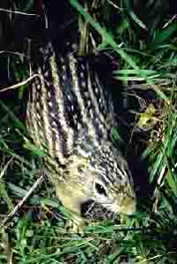

Білка Білосмуга зі світлими штрихами з боків тіла, одна з найпомітніших білок Гани та сусідніх країн.
Це звірятко часто
зустрічається групами по кілька особин, які, побачивши людину, починають збуджено кричати, піднімаючи паніку серед мешканців лісу.
Ці білки розмножуються 3 - 4 десь у рік, у одному виводку зазвичай буває 2 - 3 дитинчата.
Смугасті білки добре живуть у неволі, швидко звикають до господаря і не намагаються втекти навіть при утриманні поза клітиною.